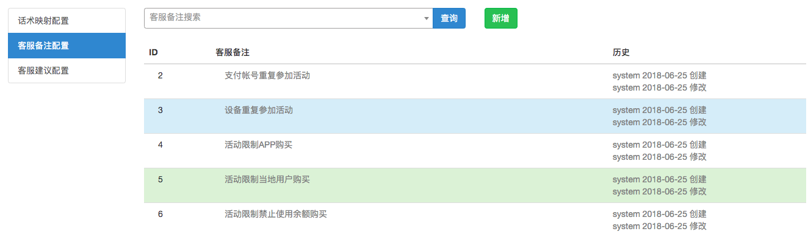
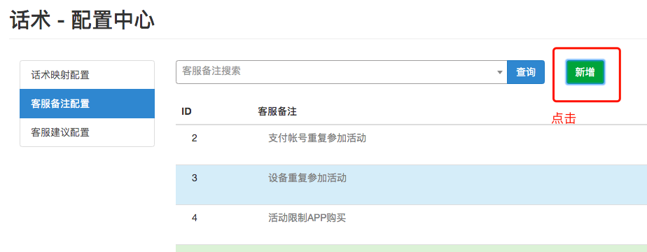
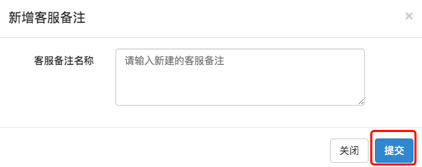

（旧版）说明：添加话术（客服备注、客服建议）
⚠️注：（本功能已迁移zeus，请见说明：话术管理）
一、背景
目前的Zeus侧的话术配置是研发hardcode实现，每次增加开发、上线；
二、操作详情
1.用户操作流程概述
2.详细操作流程
Step1:入口
客服备注配置：http://rc-skywalker.sankuai.com/explaination_conf/remark_index
客服建议配置：http://rc-skywalker.sankuai.com/explaination_conf/advice_index

Step2:添加话术
点击新增-->填写客服备注-->提交


三、FAQ
Q1:提示没有权限怎么办？
--A：发送邮件开通权限，详情见：00 请看一下是否有你想问我的问题
Q2:客服备注填写错误怎么办？
--A：目前因客服备注修改会影响太平洋侧展示，前端页面暂不支持修改和删除，可大象联系SkywalkerRD进行处理
Q3:还做了哪些客服备注相关优化？
--A：优化了规则配置客服备注的操作方式，由下拉框，改成了模糊搜索。用户可在客服备注列表页面中查看有哪些备选项，在规则中模糊搜索选定配置
Q4:客服备注、客服建议、话术间是什么关系？
--A：见下表格
|
类型 |
在哪里创建 |
在哪里使用 |
同太平洋页面字段对应关系 |
含义/特点 |
|---|---|---|---|---|
|
客服备注 |
Skywalker |
Zeus-规则、太平洋系统 |
风控拦原因 |
面向PM，同规则绑定 |
|
客服建议 |
Skywalker |
Zeus-规则、太平洋系统 |
客服话术 |
面向运营，同规则绑定 |
|
话术 |
Skywalker |
太平洋系统 |
给客服建议 |
面向客服 |